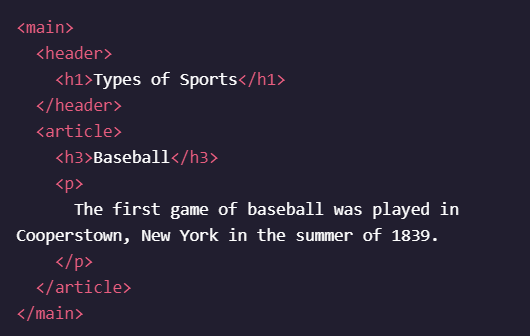
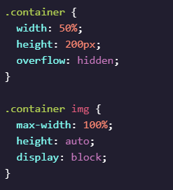
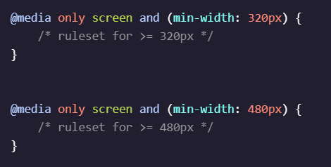
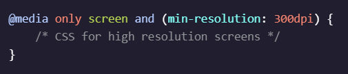

HTML - Elements
19.03.2021
#html
<em></em> - italic<strong></strong> - bold<video></video> element embeds a media player for video playback. The src attribute will contain the URL to the video. Adding the controls attribute will display video controls in the media player. Note: The content inside the opening and closing tag is shown as a fallback in browsers that don’t support the element.<video src="myVideo.mp4" width="320" height="240" controls> Video not supported</video> <img> element can have alternative text via thealt attribute. The alternative text will be displayed if an image fails to render due to an incorrect URL, if the image format is not supported by the browser, if the image is blocked from being displayed, or if the image has not been received from the URL. The text will be read aloud if screen reading software is used and helps support visually impaired users by providing a text descriptor for the image content on a webpage.
<img src="https://content.codecademy.com/courses/web-101/web101-image_brownbear.jpg" alt="text describing image" /> <span></span> element is an inline container for text and can be used to group text for styling purposes.<ul> unordered list element is used to create a list of items in no particular order. Each individual list item will have a bullet point by default.type="square" - kwadratytype="circle" - kółka<OL> ordered list element creates a list of items in sequential order. Each list item appears numbered by default.type="A" type="a" type="I" -
ID - Valid id attributes should begin with a letter and should only contain letters (a-Z), digits (0-9), hyphens (-), underscores (_), and periods (.). -
NAME - HTML attributes consist of a name and a value using the following syntax: name="value" and can be added to the opening tag of an HTML element to configure or change the behavior of the element.<elementName name="value"></elementName>
HTML - Structure
19.03.2021
#html
-
<head></head> - element contains general information about an HTML page that isn’t displayed on the page itself. This information is called metadata and includes things like the title of the HTML document and links to stylesheets. -
<title></title> - element contains a text that defines the title of an HTML document. The title is displayed in the browser’s title bar or tab in which the HTML page is displayed. The "title" element can only be contained inside a document’s "head" element.
-
<a></a> - is used to create hyperlinks in an HTML document. The hyperlinks can point to other webpages, files on the same server, a location on the same page, or any other URL via the hyperlink reference attribute, href. The href determines the location the anchor element points to.<a href="https://www.wikipedia.org/">This Is A Link To Wikipedia</a> target="_blank" - otwiera w nowej stronie./ A relative path is a filename that shows the path to a local file (a file on the same website, such as ./index.html) versus an absolute path (a full URL, like https://www.codecademy.com/learn/learn-html which is stored in a different folder). The ./ in ./index.html tells the browser to look for the file in the current folder.# Anchor element can create hyperlinks to different parts of the same HTML document using the href attribute to point to the desired location with # followed by the id of the element to link to.<p id="id-of-element-to-link-to">A different part of the page!</p> <a href="#id-of-element-to-link-to">Take me to a different part of the page</a> <!-- --> - komentarz-
<!DOCTYPE html> - is required as the first line of an HTML document. The doctype declaration is an instruction to the browser about what type of document to expect and which version of HTML is being used, in this case it’s HTML5.
html: tables
22.03.2021
#html
-
<table></table> - tworzy tabele, element nadrzędny -
<tr></tr> - table row, wiersz kolumny, poziomo
-
<td></td> - table data, pojedyncza komórka z danymi
-
<th></th> - table heading, nagłówek tabeli, tytuły, mogą być umieszczane w wierszach lub kolumnach<th scope="col"> - heading dla kolumny<th scope="row"> - heading dla wiersza<th></th>> - pusta komórka headingu
-
border: ; - do wpisania w css dla tr, td, th -
spanning - rozszerzenie komórki w dół lub w bok<td rowspan="2"> - rozszerzenie na dwie komórki wszerz wiersza<td colspan="3"> - rozszerzenie o trzy komórki wzdłuż kolumny
-
<tbody></tbody> - do sekcjonowania wiekszych tabel, zawiera wszystkie dane, oprocz headingów
-
<thead></thead> - zawiera dane nagłówków
-
<tfoot></tfoot> - zawiera dane sumaryczne na dole tabeli
HTML - SEMANTIC
19.03.2021
#html
-
<header></header> zamiast<div id="header"></div> - góra strony
-
<nav></nav> - buttony nawigacyjne -
<Main></Main> - used to encapsulate the dominant content within a webpage, zawiera header
 -
<footer></footer> contains information such as: Contact information, Copyright information, Terms of use, Site Map, Reference to top of page links
oddzielnie od maina -
<section></section> - defines elements in a document, such as chapters, headings, or any other area of the document with the same theme, Generally developers will use /section/ to define a theme for the webpage and use /article/ to write independent content for that theme. This does not mean that /article/ has to be used with /section/. -
<article></article> - holds content that makes sense on its own such as articles, blogs, and comments -
<aside></aside> - used to mark additional information that can enhance another element but isn’t required in order to understand the main content. This element can be used alongside other elements such as /article/ or /section/. Some common uses of the /aside/ element are for: Bibliographies, Endnotes, Comments, Pull quotes, Editorial sidebars, Additional information
An example of this would be an article that discusses how to take care of a dog and next to the article an ad would appear advertising a dog grooming product.
-
<figure></figure> - is an element used to encapsulate media such as an image, video, gif, illustration, diagram, code snippet, etc, which is referenced in the main flow of the document -
<figcaption></figcaption> - used to describe the media encapsulated within the /figure/ element. Developers will normally use /figcaption/ within the /figure/ element to group the media and description. This way, if a developer decides to change the position of the media, the description will follow along with it.
-
<audio></audio> <audio><source src="iAmAnAudioFile.mp3" type="audio/mp3"></audio> <audio src="koreanhiphop.mp3"></audio> <audio autoplay controls> attributes: control, autoplay, volume, duration, loop, muted -
<video></video> <video src="coding.mp4" controls>Video not supported</video> attributes: control, autoplay, volume, duration, loop, muted -
<embed> - any media: gif, video, image<embed src="download.gif">
CSS: basics
19.03.2021
#css
-
<LINK> można pominąć type<link href="style.css" type="text/css" rel="stylesheet"> -
Inline style <p style="color: red;">I'm learning to code!</p> -
Style tag <head><style></style></head> -
class="guwno" >.guwno -
id="guwno" >#guwno h1.guwno {} - The code above would select only the h1 elements that have a class of .guwno. If a p element also had a class of .guwno, the rule in the example would not style the paragraph.-
.guwno h1 {} - ! ze spacją ! - wybiera h1 zagnieżdżone w .guwno
-
h1, h1, .guwno, .elo - ! po przecinku ! - wybiera kilka selektorów -
!important - used on declarations to override any other declarations for a property and ignore selector specificity. !important rules will ensure that a specific declaration always applies to the matched elements. However, generally it is good to avoid using !important as bad practice. -
+ - is called the adjacent sibling combinator; it will only select two elements when they are immediately next to each other, with the same parent. The element that actually gets selected is the second element of this sibling pair..breadcrumb li+li { } -
::before - part of this selector creates a pseudo-element. The ::before pseudo-element is often used with the content property, to add content that will be displayed just before the selected element..breadcrumb li+li::before { content: "/"; } -
* {} - uniwersalny selector, dla wszystkich elementów -
type[attribute*=value] attribute selector, pozwala zaznaczać elementy o okreslonym atrybucie i wartości tego atrybutu
The first ruleset looks for an img element with an attribute of src that contains the string 'winter', and sets the height to 50px.
CSS Selectors
CSS: visual rules
19.03.2021
#html
-
font-family: - default Times New Roman, nie wiecej niż 3 na strone, jeśli nazwa fonta składa sie z kilku wyrazów trzeba użyć "" -
font-size: - wyrażane w px,0.5em - połowa rodzica,0.5rem - połowa body -
font-weight: normal - 400, bold - 700, 300 - light, bolder - o jeden stopień grubszy niż parent element, lighter - o jeden stopień cieńszy niż parent elementfont-weight: 800; -
text-align: - left, right, center -
color: - white, #111111, rgb, hsl, hslabackground-color: -
opacity: - przezroczystość,opacity: 0.8; -
background-image: background-image: url("https://www.example.com/image.jpg"); background-image: url("images/mountains.jpg"); -
box-shadow: - cień dla całego elementubox-shadow: 3px 1px 1px red; - 3 po osi x, 1 po osi y, 1px rozmycia i kolor czerwony -
vertical-align: ; - umiejscowienie góra-dółvertical-align: super; - napis na górze, jak potęgowanie
Css: colors
19.03.2021
#css
-
Hexadecimal - A hex color begins with a hash character (#) which is followed by three or six characters. The characters represent values for red, blue and green. (0-9) i (A-F)Black:#000000 or #000 White:#FFFFFF or #FFF Aqua:#00FFFF or #0FF -
RGB() - Red, Green, Blue - these values range can from 0 to 255.color: rgb(0, 255, 0); -
HSL() - Hue, Saturation, Lightnesscolor: hsl(120, 60%, 70%);
-
Alpha - opacity - dodaj do hsla lub rgbacolor: hsla(34, 100%, 50%, 0.1); color: transparent; kolor o zerowym alpha
CSS: typography
19.03.2021
#css
-
font-style: font-style: italic; -
word-spacing: - Note that it’s good to use em values in this case because em is dynamic — for word spacing, it sets the spacing based on the size of the font. In the example above, the word spacing is set to 0.3em. The default amount of space between words is usually 0.25em and can be set with the value normal. If you provide a value for word-spacing that’s not normal, then the value you provide is added to the default spacing. Therefore, since the word-spacing is set to 0.3em, your /h1/ elements get a total of 0.55em word spacing when rendered.word-spacing: 0.3em; -
letter-spacing: - inaczejtracking letter-spacing: 0.3em; -
text-transform: - capitalize - pierwsza litera zmienia na wielką, lowercase - wszystko małe, uppercase - wszystko capsemtext-transform: none|capitalize|uppercase|lowercase|initial|inherit; -
line-height: - zmienia 'leading'line-height: 1.4; - ratio of font size, readjustable, preferowaneline-height: 14px| 40% | 0.7em;
-
Fallback fonts font-family: "Garamond", "Times", serif; -
Linking Fonts
Google Fonts<head><link href="https://fonts.googleapis.com/css2?family=Open+Sans&family=Playfair+Display" rel="stylesheet"></head> - to do pliku htmlfont-family: "font-name"; - to do pliku css -
Font Face - load font into stylesheet css
@font-face {- to na samą górę pliku css
font-family: 'Glegoo';
src: url('../fonts/Glegoo-Regular.ttf') format('truetype'); }font-family: "font-name"; - to do pliku css -
text-shadow: text-shadow: 2px 3px 5px red; - horizontal, vertical, rozmycie, kolor
css: box model
22.03.2021
#css
-
border: - ramkaborder: 3px solid white; border-style: none | dotted | solid | dashed | hidden | double | ridge | groove | inset | outset border-right-style: dotted border-bottom-color: white | rgba (0,0,0,0) border-top-width: 3px | thin | medium | thick -
border-radius: - zakrzywienie ramkiborder-radius: 50% - okrągła ramkaborder-radius: 2px -
padding: - pole wewnątrz obiektu, otoczone ramkąpadding-bottom: 10px; - dolny 10pxpadding: 10px; - z każdej strony 10 pxpadding: 10px 20px 30px 40px; - górny 10px, prawy 20px, dolny 30px, lewy 40pxpadding: 10px 20px; - górny i dolny 10px, prawy i lewy 20px -
margin: - pole na zewnątrz obiektu i ramkimargin: 10px; - z każdej strony 10pxmargin-bottom: 10px; tylko dolny 10pxmargin: 10px 20px 30px 40px; - tak jak w padding
width:100px; margin: 0 auto; - wycentrowanie obiektu, ale tylko mającego określoną szerokość (width) -
margin collapse - dotyczy górnego i dolnego marginesu, jeśli dwa obiekty jeden nad drugim, mają dolny margin 30 i górny 20, to różnica między nimi wyniesie tylko 30px, marginesy sie nie dodają
-
min-width: - can be used to set a minimum width and minimum height of an element’s boxmax-height: - same -
overflow: - co ma sie stac, kiedy element staje się większy niż element nadrzędny, zawierający go w sobiehidden - ukryj zupełniescroll - dodaj pasek przewijania i skrolujvisible - default, wyswietlaj mimo to, rozjebawszy układoverflow-x: ; - poziomooverflow-y: ; - pionowo
element musi zawierać określone wymiary width i height -
resetting defaults - usunięcie domyslnych wartosci css wbudowanych w przegladarke* { margin: 0; padding: 0; }
Normalize css - nie kasuje wszystkiego, a usuwa roznice miedzy przegladarkami -
visibility: hidden; - ukryj element, property is used to render hidden objects invisible to the user, without removing them from the pagevisibility: visible; - default -
box-sizing: - sposób rozmiarowania elementówcontent-box - default, nie uwzględnia wartość padding i border, trudniejsze rozmiarowanieborder-box padding i border są wewnątrz boxa, wiec kiedy width jest ustalone na 300px to zmieniajac wartosc paddingu lub border, zmieni sie zawartosc główna* { box-sizing:border-box; } - zmiana rozmiarowania dla wszystkich elementów
css: display and positioning
22.03.2021
#css
-
position: static - defaultrelative - przesunięcie wobec defaultowej, static pozycji elementu, wymaga instrukcji przesuniecia - inaczej zachowuje sie jak statictop:10px; - przesuwa w dół o 10pxleft:10px; - przesuwa w prawo o 10px itd.absolute - element ignoruje elementy tego samego poziomu, pozycjonując go relatywnie wobec elementu rodzicafixed - podobnie jak absolute, ale przy przewijaniu element pozostaje na swojej pozycji, uzywane przy headerze, footerze, navbarzesticky - działa podobnie jak fixed, ale lepiej -
z-index: - tworzy głębie dla elementów, trzeci wymiar w układzie, decydując który element jest wyświetlany nad którymz-index: 10; - im wyższy, tym bardziej na wierzchu -
display: inline - domyślne dla span, a, em, strong - obiekty tagowane mogą ustawiać sie w jednej linii z innymi - box zabiera tylko tyle miejsca, ile potrzebuje do wyswietlenia tresci, nie może być ustalony width ani height takich elementówblock - domyślne dla h1,h2,h3 itd, p, div, footer - przeciwieństwo inline - potrzebują nowej linijki dla samych siebie, nie mogą sąsiadować z niczym, można ustalić ich wymiaryinline-block domyślne dla img - mieszanka inline i block, mogą występować obok siebie i możemy określić ich wymiary width i height, nie trzeba używać /br/ -
float: - ustawia kierunek występowania po sobie kolejnych elementówfloat: right | left; -
clear: - wykorzystywany w kombinacji zfloat , pokazuje z której strony obiektu nie może być żadnych innych obiektów, którą stronę wyczyścić?clear: right | left | both | none;
Color Theory
24.03.2021
#css
-
primary colors - red, blue, yellow -
secondary colors - mixing primary - green, orange, purple -
third group - mixing secondary with primary -
Red-orange (Vermillion)
Yellow-orange (Amber)
Yellow-green (Chartreuse)
Blue-green (Teal)
Blue-purple (Violet)
Red-purple (Magenta)
-
tint - adding lightness - trzecia wartosc w hslshade - decreasing color, adding black - trzecia wartosc w hslacolor contrast - kolory naprzeciwko siebie na kole kolorówvibrating colors - unikać!, kolory complementary, wysokie nasycenie, trudne dla oczubackdrops - dla eliminacji vibratins colors, uzywanie prześciowego tła o neutralnej barwie -
color schemes - Adobe color
monochromatic - wariacje jednego koloru, ciemniejsze lub jasniejsze, poczucie uporządkowania, niski kontrast, użycie białego i czarnegocomplementary - kolory przeciwne sobie na kole, uzywane w logo druzyn sportowych, przyciąga uwage, dobre na buttonyanalogous - sąsiadujące ze sobą kolory, ładne, uspokajające zestawienie, low-contrast - wpadają w podobny ton, nie powinny być uzywane do przyciagania uwagi, dobre na stonowane tło dla reszty contentu,triadic - trzy kolory z trójkąta, poczucie równowagi, bezpieczeństwa, wieksze pole do manewru -
color psychology - Every color has a different context and meaning, and color psychology can impact how people perceive a design and relate to the colors used. Choosing the right colors can help nonverbally communicate the context and emotion of a product or service.
Color UI
25.03.2021
#css
-
Remember: Select a dominant brand color and supporting accent colors Use contrast to define sections and differentiate actions Use semantic colors for error and success messages Incorporate default colors for text and backgrounds where needed Neutral colors can provide good contrast Keep users in mind when selecting color
Cloudflare
text design
26.03.2021
#css
-
Whitespace - A website is like a room, the user needs to be able to move through it easily. And just like a room, it is important to keep it tidy and free of clutter. This is the power of whitespace. Good whitespace allows you to increase the legibility of your text, helps prevent users from skimming over elements, and serves as an unintrusive boundary between different sections of the page, without actually being there. -
line spacing - leading, odległosc, miedzy dwoma linijkami tekstu,line-height: ;
-
tracking - odległość miedzy literami i słowami,
-
kerning - odległość miedzy dwoma literamiletter-spacing: ;
-
text navigability links should be blue and underlined never use blue as a general accent color for text, because your users will probably try to click on it no matter what. think about the ways the user’s eyes will travel across your text if you organize the text into columns, - the user’s eyes will likely not travel across the entire screen, they will travel to the end of a column and then down -
text length - The average internet paragraph is only 1-3 sentences. It’s actually better to avoid sentences and paragraphs whenever possible and use a list instead.line lenght - Studies have shown that while users read longer line lengths faster, they actually prefer shorter line lengths and that they provide a better user experienceThe best bet is to aim to have columns that contain roughly 50-75 characters per line This will allow the reader to have the sensation of making good progress through the text without being continually interrupted by the line breaks.Primacy and Recency effect - People will notice and remember the first and last elements of a list or a page better than anything in the middle of the list/pageimage pairing - Users eyes are easily drawn to images quicker than they are to text. You can utilize this by pairing important text with images whenever appropriate. This pairing can be accomplished by grouping with card designs (putting them in a div together with a shared background color). This is a great way of adding visual appeal to your text.Use colored cards to pair images with important text so users’ eyes are drawn towards it. f-shaped skimming - Users will scan content on the left of the screen before the right of the screen, and the top of the screen before the bottom of the screen. Our eyes jump back to the left of the screen whenever we finish reading a line. This creates an F pattern that the users eye follows, and is thus known as _f-shaped skimming _.Have the elements you want users to notice at the top of the page, or down the left-hand side - because those are the areas of the page users will notice when skimming.
HTML: Forms
27.03.2021
#html
-
<form></form> <form action="/example.html" method="POST"></form> action= - determines where the information is sentmethod= - attribute is assigned a HTTP verb that is included in the HTTP requestmethod="post" - wartosc ukrytamethod="get" wartośc zawarta w adresie url, lepiej nie uzywać -
<input> <input type="text" name="first-text-field" value="guwno" id="test" placeholder="wpisz co jadłeś na śniadanie" required> name="" - wysyłane z forma jako "name=value", zwykle pokrywa sie z id, bardzo wazne, zeby zawsze był w inpucie, bez tego informacje nie zostana przetworzone właściwievalue="" - domyślna wartość, mozemy ją ustawić wcześniej, jesli uzytkownik wpisze własną wartość, zmieni to domyślne valueplaceholder="" - podpowiedź dla uzytkownika, co ma wpisać w dane poletype="" - definiuje rodzaj inputuid="" - uzywane w polaczeniu z labelemrequired - wymagane, bez wypełnienia tego inputu nie mozna przejsc dalej -
<label></label> - opis powiazany z inputem, wymaga podania wartosci /for/ toższamej z /id/ inputu<label for="meal">What do you want to eat?</label> <input type="text" name="food" id="meal"> jeśli naciśniemy label, podswietli przypisany mu input -
type="password" - input dla haseł, nie wyswietla wpisanego tekstu, a zakryte znaki
-
type="number" - input dla wartości liczbowych oraz znaków (-, +, .)step="1" - dodaje strzałki, pozwalajace zmieniac liczbe o podana wartość
-
type="text" - zwykły input tekstowy
-
type="range" - zakres z paskiem i suwakiem, volume control
min="" - wartość początkowamax="" - wartość najwyższa możliwastep="1" - zmienia skok suwaka, im wyzsza wartosc tym bardziej choppy, a mniejsza daje fluid -
type="checkbox" - okienko z wieloma wariantami wyboru do zaznaczenia na raz
-
type="radio" - guziki do zaznaczania z jedną możliwością wyborużeby działało, poszczegolne opcje muszą miec to samo /name
-
dropdown list - gdy opcji jest duzo dajemy rozwijana liste zamiast radio
-
datalist input - gdy opcji jest trubodużo i chcemy włączyć wyszukiwarke po wpisaniu początkowych liter, dajemy datalistnie trzeba dawać nazwy pomiedzy tagami /option/ <input type="text" list="cities" id="city" name="city"> <datalist id="cities"> <option value="Barcelona"></option> <option value="Wyszków"></option> </datalist>
-
<textarea></textarea> - większe niż type="text"rows="" - określa ilość wierszy pola tekstowegocols="" - ilość kolumn pola tekstowego<textarea id="blog" name="blog" rows="5" cols="30"></textarea>
Tekst wpisany pomiedzy tagami /textarea/ bedzie domyślnie wprowadzony i wyświetlony uzytkownikowi
-
type="submit" - tworzy guzik zatwierdzajacy i wysyłajacy forma<input type="submit" value="Send"> value="" - edytuje tekst widoczny na przycisku
HTML: form validation
29.03.2021
#html
-
required - wymagane, bez wypełnienia tego inputu nie mozna przejsc dalej -
minimum, maximum - określenie wymaganej, granicznej wartości<input id="guests" name="guests" type="number" min="1" max="4">
-
minlength, maxlength - dla pola textfield, określa graniczne ilości wpisanych znakówmaxlength="200"
-
pattern="" - regex - regular expression - dla określania specyficznych, wpisywanych znaków, zazwyczaj przy haśle lub loginiepattern="[0-9]{14,16}" - tylko cyfry, od 14 do 16 znaków[a-zA-Z0-9]+ - wszystkie małe i duże litery, cyfry, + oznacza powtórzenie wielokrotne tych znaków tzn nie ma limitu znaków dolnego ani górnego, nie można pozostawić pustego[a-zA-Z0-9]* - to samo, ale mozna zostawić pole puste
Regular Expressions
Quickstart
css: links and buttons
29.03.2021
#css
-
link styling - wyróżniający w zdecydowany sposób od innych treści, tak zeby uzytkownik nie miał wątpliwości co jest linkiemtext-decoration: underline; - jeśli linki są podkreślone, nic innego nie powinno byćtext-decoration: none | underline | overline | line-through | dotted | dashed | wavy | red | green color: blue; backround-color: ; font-weight: ; border: ; -
title="" - dodaje tooltip, wyswietlajacy się po najechaniu na link<a href="https://www.codecademy.com" title="Codecademy is an online learning platform">Codecademy</a>
Codecademy -
:link - pseudoclass dla linków, które nie zostały odwiedzone -
:visited - pseudoclass dla linków, które zostały odwiedzone -
:hover - pseudoclass uzywany do wyroznienia elementu, na ktory najechał kursora:hover { color:orange; } -
:active - pseudoclass dla linków, które są wciśnięte -
cursor: ; - po najechaniu na link, kursor powinien sie zmienić, by zasygnalizować odmiennośc tego elementucursor copy cell crosshair help default grab move pointer progress row-size text wait none
Cursor -
Buttons: Skeuomorphic styling - aims to imitate the appearance and interactivity of a real-life button
aby uzyskać efekt wcisnięcia - dajemy box shadow na buttonie, a w stanie :active, kasujemy box-shadow i obnizamy button wartością margin-top plus do tego zmiany koloru
secondary navigation
31.03.2021
#css
-
primary navigation - najwazniejsze linki i buttony wyswietlane na kazdej podstronie -
secondary navigation - breadcrumb navigation - lista odnosników, stron, ktore prowadziły do obecnie wyswietlanej strony, pomaga zrozumiec gdzie jesteśmy, szczegolnie gdy trafilismy na strone przypadkiem z wyników wyszukiwaniazwykle położona w lewym górnym rogu, ułożona w poziomie, zajmuje jak najmniej miejsca oddzielona znakami > lub \ display:inline;
strona na której sie znajdujemy powinna prowadzić do<a href="#"></a>
-
breadcrumb types loaction - based on hierarchical structure of siteattribute - based on attributes of current page or item, dobrze jest wyróżnić ich odmiennośćpath - unique to a user’s journey on the site, rzadko używane, konfudujące -
attribute type css - jak wyróżnić ten element od innych dodajac znak x na koncu
-
::before - jak znaznaczyć element, aby dodać do niego znak >.breadcrumb li.location+li.location::before{ content:">"; }
Resonsive web design
08.04.2021
#css
-
<meta name="viewport" content="width=device-width; initial-scale=1.0"> - dodać, aby iphone nie skalował obrazków niepotrzebnie - - ustawienia dla pliku css ładowanego dla mniejszych ekranów, ale tylko w przypadku, gdy urządzenie nie obraca się, nie polecana metoda, lepszy css
-
min-width: ; - sets a minimum browser or screen width that a certain set of styles (or separate style sheet) would apply to.max-width: ; - opposite@media screen and (min-width: 800px) and (max-width: 1200px) { - dla rozdzielczosci pomiędzy -
orientation: ; - tylko dla ipada :(orientation: lamdscape | portrait; @media screen and (orientation: portrait) { -
display:none; - pozwala ukryć treść wyrzucając cały box z układu, a nie tylko go ukrywając jak wvisibility:hidden;
sizing
08.04.2021
#css
-
em - odnosi sie do wielkości czcionki rodzica, mnoży ją przez wpisana wartośćfont-size: 2em; - gdy czcionka była ustawiona na 16px, to tutaj bedzie miała 32pxfont-size: 1.75em | 0.50em ; -
rem - root em - odnosci sie do domyślnej wielkości czcionki (16px) lub do wielkosci czcionki dla rootowego elementu<html></html> , dzieki czemu wszystkie czcionki sa porownywane do jednego elementu, łatwiej sie połapac co bedzie wieksze, a co mniejsze -
% - uzywane do okreslenia wielkości elementów nietekstowych (image, div, padding, margin), na podstawie ich rodzicówwidth: 50%; !wielkość elementów rodziców musi zostać najpierw określona! - inaczej mogą wystąpić błędy -
max-width: ; - minimalna szerokość elementumin-width: ; - max szerokość elementumin-width: 300px; -
max-height: ; - minimalna wysokość elementumin-height: ; - max wysokość elementumin-height: 300px;
 -
scaling background background-image: URL("#"); - ustawia obrazek tłabackground-repeat: no-repeat; - wyłącza kafelkowanie tłabackground-repeat: repeat | repeat-y | repeat-x | space | round | initial | inherit ; background-position: center; - wyśrodkowaniebackground-size: cover; - pokrywa cały element z zachowaniem proporcjibackground-size: contain; - nie przycina i nie rozciągabackground-size: auto; - chuj wi
media queries
09.04.2021
#css
-
@media - keywordonly screen - określa urządzenia z ekranemonly handheld | only print and (max-width : 480px) - media feature - wymagania jakie muszą być spełnione, by dana zasada została zastosowana, w tym przypadku to ekrany nie szersze niż 480px -
range - pozwala ustalić wymagania krańcowe max i min min-width:100 - większe lub równe >=100max-width:200 - mniejsze lub równe >=200
- prościej to samo co wyżej -
dpi - Dots Per Inch - pozwala targetować wyswietlanie mediów w hd tylko na urządzeniach o odpowiednim wyswietlaczu, ktory potrafi to obsłuzyc(min-resolution: 300dpi) - 300 to już dużo, hd-ready, wpisujemy jako warunek w @media  -
and - operator pozwalający łączyć i wymagać spełniania kilku warunków jednocześnie -
comma list - jeśli tylko jeden z warunków, a nie wszystkie na raz, musi być spełniony, to zamiast operatora and, uzywamy przecinka -
(orientation: ) - sprawdza czy strona jest bardziej szeroga czy długaorientation:portrait | landscape
flexbox
13.04.2021
#css
-
flexbox - is not meant to lay out entire pages, it is useful for positioning elements, whether individually or in groups, dobre dla stron o zmiennej szerokościflex container - zawiera w sobie flex itemsdisplay:flex | inline-flex ; flex item - kazdy bezpośredni child flex containerazastosowanie: - nawigacja strony, łatwe centrowanie elementów, łatwe przestawianie elementów -
display: flex; - nadawane aby element stał sie flex containerem, element zachowuje sie jak block, nic innego nie pojawi sie na jego linii, zmienia zachowanie elementów child -
display: inline-flex; - w odróżnieniu od zwykłego flexa, container również jest elastyczny i zachowuje sie jak inline, umozliwiajac innym elementom sąsiadowaniejeśli element child jest większy od parenta, to skurczy się, zeby sie w nim zmieścić -
justify-content: ; - umożliwia pozycjonowanie flex items od lewa do prawajustify-content: center; flex-start - zaczyna od lewej parent containera, bez przerw pomiędzyflex-end - odwrotnie, zaczyna od prawejcenter - elementy rozmieszczone pośrodku, bez przerw przed, pomiędzy ani za nimispace-around - każdy element ma przerwę przed i za nim, w rezultacie mają podwójne przerwyspace-between - przerwa tylko pomiędzy elementamimargin i border nie zaliczają się do przerw, są zawsze obecne -
align-items: ; - umożliwia pozycjonowanie flex items wertykalnie (góra-dół)flex-start - na górzeflex-end - na dolecenter - po środkubaseline - spód każdego elementu będzie ze sobą wyrównanystretch - jeśli to możliwe i jeśli elementy nie mają ustalonej wysokości, to będą rozciągnięte od góry do dołu maksymalniemin-height: ; - minimalna wysokość elementu, element na prznajmniej taka wysokość, pomocna przy stretchowaniumax-height: ; - j/w tylko max -
flex-grow: ; - jeśli container jest za duży, to można dzięki temu określić, które elementy mają zostac powiększone by zapełnić lukęflex-grow: 2; - element powiększy swoje pole dwa razy bardziej niż element o wartości flex-grow:1;, jesli wolnego miejsca jest 75px, to weźmie on 50px, a drugiemu zostawi 25pxflex-grow: 1; - jeśli ustawimy wszystkim elementom taką wartośc, bedą rosły równo, jeśli ustawimy tylko jednemu, to tylko on bedzie rósłmin-width, max-width, min-height, max-height - mają tu zastosowaniedomyślna wartość to flex-grow:0; - dlatego tez póki nie zapiszemy tej reguły, nie bedzie rosło -
flex-shrink: ; - analogicznie do flex-grow, tylko co robić gdy container się zmniejszyflex-shrink: 1; - domyślna wartość, dlatego elementy maleją automatycznie bez koduflex-shrink: 0; - element nie bedzie sie kurczyłmarginsy są wyłączone z flex-shrink i flex-grow - nie można ich zmienić -
flex-basis: ; - inny sposób określenia bazowej wielkości elementu, zamiast określania width lub heightflex-basis: 50px; ograniczone przez max/min-width/height jeśli wpisane, zastępują wartości height i width -
flex: ; - shorhand, dla szybszego wpisywaniaflex: 2 1 150px; flex-grow:2, flex-shrink:1, flex-basis:150pxflex: 2 1; - flex-grow:2, flex-shrink:2flex: 2 150px - flex-grow:2, flex-basis:150pxnie można okreslić tylko flex-shrink i flex-basis w jednym shorthandzie -
flex-wrap: ; - określa czy element ma zostac przeniesiony do następnej linii kiedy sie nie mieści w containerzeflex-wrap: nowrap; - domyślne, zapobiega wrapowaniuflex-wrap: wrap; - przenosi wybrany element do nastepnej liniiflex-wrap: wrap-reverse; - odwrócenie, ten element zostanie, a przeniesione zostaną inne, generalnie popierdolone i chyba nie ma sensu używac
-
align-content: ; - góra-dół - kiedy mamy kilka linii elementów, możemy pozycjonować te linie wobec siebie, podobnie jak walign-item flex-start - linie na górze containeraflex-end - na dolecenter - po srodkuspace-around - równomiernie od góry do dołu, ale z przestrzenią przed i pomiędzyspace-between - równomiernie, ale z przestrzenią tylko pomiędzy elementamistretch - rozciąga jak tylko sie da po całości containera, dobrze jest dodać wartośćmin-height -
flex-direction: ; - odwraca osie, zmieniając kolumny z liniami, transcośtammain axis - horyzontalna, uzywana do pozycjonowania justify content, flex-wrap, flex-grow, flex-shrinkcross axis - wertykalna, używana do pozycjonowania align-item, align-contentflex-direction: row; - default, od lewej do prawej i w dołflex-direction: row-reverse; - pozycjonowanie od prawej do lewej i w dółflex-direction: column; - od góry do dołu, zaczynając od lewej stronyflex-direction: column-reverse; - od góry do dołu, zaczynając od prawej strony -
flex-flow: ; - shorthand dla flex-direction i flex-wrapflex-flow: column wrap; -
nested flexboxes - container zanestowany w innym containerze, do tworzenia layoutów
Grid
29.04.2021
#css
grid anatomy -
column - pionowy container -
row - poziomy container -
gutter - wolna przestrzeń pomiędzy kolumnami i rzędami, zawsze o jeden mniej niz liczba kolumn, powinien być na tyle duży, zeby widzieć granice pomiedzy kolumnami, ale mniejszy niż te kolumny -
responsive grid - gridy jako popularne narzedzie do skalowania stron, max contentu i duża wygoda plus przewiew w layoucie -
passive whitespace - micro whitespace - bardziej estetyka niż pokazywanie kierunku i uwypuklanie elementów, drobne zmiany tylko, text elementy, zależy już nawet od fonta, a potem line-height, margin, -
active whitespace intencjonalne wysuwanie elementów przed szereg i akcentowanie ich ważności na stronie, pomaga użytkownikowi skupić sie na tym, co najwazniejsze i przechodzić od punktu do punktu
Grid Container
11.05.2021
#css
-
grid container - parent element dlagrid items nadający im pozycjonowanie i formatowanie -
display: grid; - block-level griddisplay: inline-grid; - inline grid -
grid-template-columns: ; pozwala na tworzenie i zarządzanie ilością i szerokością kolumn, domyślnie każdy grid ma tylko jedną kolumnęgrid-template-columns: 200px 100px; tworzy dwie kolumny o szerokości 200 i 100grid-template-columns: 20% 30% 10%; - tworzy trzy kolumny o szerokości odpowiadającej procentowej szerokości całego grida, potrzeba ustanowićwidth: ; dla danego gridagrid-template-columns: 50px auto 50px; - środkowa kolumna będzie miała szerokośc dopasowaną do reszty pozostałego miejsca lub zawartości -
grid-template-rows: ; - tworzenie poziomych wierszy grida, analogicznie do kolumn, tyle tylko ustawiamyheight: ; grida -
możemy tworzyć grid-template-areas - przy pomocy grid-template-columns i rows, wystarczy wpisać pomiędzy tworzone rzędy nazwy pól, np. [main-start] i potem [main-end] -
grid-template: / ; - shorthand dla ustalania wierszy i po slashu (/) kolumngrid-template: 100px 40% / 200px 200px 300px; - dwa wiersze i trzy kolumny -
fraction -fr - względna jednostka skalowania - responsive unit - zapobiega overflow i wyjezdzanie kolumn poza szerokość grida, dzieli go na części, frakcjegrid-template: 2fr 1fr 1fr / 1fr 3fr 1fr; - wiersze podzielone na cztery części z 4fr - pierwszy wiersz dostanie połowę wysokości, a dwa pozostałe po ćwierci, podobnie kolumnygrid-template-columns: 1fr 60px 1fr; - 60px zostaje zabrane z całości, a frakcje dzielą pozostały z tego obszar, co zapobiega overflowgrid-template-columns: 1fr 20% 1fr; - druga kolumna zajmuje 20% szerokości, a pozostałe dwie dzielą się tym co zostało -
vmin - wartośc odpowiadającą procentowi szerokości lub wysokości ekranu wyswietlającego dany element, lepiej skalowalny na różnych ekranach, warto sprawdzićgrid-template-rows: repeat(5, 20vh); -
repeat ( , ) - funkcja, którą można wpisać przy tworzeniu kolumn i wierszy aby zapobiegać powtarzaniu dużych ilości podobnych wartościgrid-template-columns: repeat(3, 100px); - tworzy trzy kolumny o szerokości 100pxrepeat(5, 1fr) - pięć elementów podzielonych na równe częścigrid-template-columns: repeat(2, 20px 50px) - tworzy cztery kolumny, gdzie pierwsza i trzecia beda miały 20px, a druga i czwarta 50px;można używac w shorthandzie - grid-template: repeat(3, 1fr) / 3fr 50% 1fr; -
minmax ( , ) - funkcja, pozwalająca określić max i min wartości szerokości kolumny lub wysokości wiersza, w zależności od zawartości lub rozmiaru wyświetlaczagrid-template-columns: 100px minmax(100px, 500px) 100px; - dwie skrajne kolumny mają szerokość 100px, a środkowa jest zmienna pomiędzy 100 a 500px -
auto - szerokość lub wysokośc elementu będzie dopasowana do zawartości, przydatne przy ustalaniuminmax -
grid-column-gap: ; column-gap: ; - ustanawia przerwę pomiędzy kolumnami, ale tylko pomiędzy nimi, a nie na początku czy końcu gridagrid-row-gap: ; row-gap: ; - przerwa pomiędzy wierszami, ale tylko pomiędzy nimi, a nie na początku czy końcu gridagrid-column-gap: 10px; - przerwa 10px pomiedzy kolumnami
jeśli chcesz ustawić różne przerwy pomiędzy itemami, to lepiej wykorzystać puste dodatkowe komórki, nie da sie zmieniać wartości gapa dla poszczególnych elementów :( -
grid-gap: ; gap: ; - shorthand dla ustawienia wierszy i kolumngrid-gap: 20px 10px; - 20px dla wierszy, 10px dla kolumn
Grid items
12.05.2021
#css
-

-
grid-row-start: ; - określa gdzie zaczyna się grid item, liczba zwykłagrid-row-end: ; - gdzie kończy się item, przy czym ten numer na być większy o jeden niż dany wiersz czy kolumna, z zapasem +1grid-row-start: 1; grid-row-end: 3; - item rozciąga się od 1 do 2 wierszagrid-row-start: 2; grid-row-end: 7; - item rozciąga się od 2 do 6 wierszaz-index: ; - aby zarządzać komórkami, ktore na siebie nachodzą-1 - taka wartość w column-end zapewnia, ze item ciągnie się przez cała szerokośćgrid-column-start: col 2; - mozemy po prostu zapisac, ze item zaczyna sie w kolumnie drugiej, żeby zapomniec o mylącym numerowaniu liniigrid-column: col 2 / span 2; - najłatwiej -
grid-row: / ; - shorthand dla grid-row-start i grid-row-endgrid-row:5/7; - item od 5 do 6 wiersza -
grid-column: / ; - shorthand dla grid-column-start i grid-column-end, analogicznie co wyżej -
span - pozwala określić ilość wierszy/kolumn zajmowanych przez item począwszy od startugrid-row: 4 / span 2; - item zaczyna sie w 4 wierszu i kończy w 5 - to samo co przygrid-row: 4/6 i to samo przygrid-row:span 2 / 6; -
grid area: / / / ; - shorthand shorthandów, po kolei wartościgrid-row-start ,grid-column-start ,grid-row-end igrid-column-end grid-area: 2 / 3 / 4 / span 5; - wiersz 2 do 3, kolumna 3 do 8
Advanced Grid
13.05.2021
#css
-
grid-template-areas: "" ; - pozwala nazywać tworzone części layoutu i używać tych nazw wgrid-area ,grid-row-start ,grid-row-end itd. pojawia sie w opisie grid containera, na początku, tworzy wyobrażalny układ strony w łatwy sposób dzieląc je na części, fajne W tym przypadku, tworzy dwie kolumny i cztery wiersze - header, nav i footer są rozciagniete na całość, a info i services są obok siebie w jednym wierszu"main main . sidebar" - kropka oznacza pustą komórke, zostawia tutaj miejsce"main main none sidebar - none - no grid areas are defined, chyba pomija komórke i rozszerza reszte -
overlapping - nakładanie się elementów na siebie, dużo łatwiejsze w gridzie, wykorzystuje parametrz-index i numery kolumn, mozna to ustawić jak kratki w zeszyciecolumn axis - block axis, od góry do dołurow axis - inline axis, od lewej do prawej -
justify-items: ; - pozycjonuje elementy wobec row axis, od lewej do prawej, opisywane w grid containersstart - od lewejend - od prawejcenter - po środkustretch - wypełnia całe dostępne miejsceauto - ?baseline - ? -
align-items: ; - pozycjonuje elementy na column axis, od góry do dołu, opisywane w grid containersstart - od lewejend - od prawejcenter - po środkustretch - wypełnia całe dostępne miejsce -
place-items: ; - shorthand dla align i justify-items - w tej kolejnościplase-items: center stretch; -
justify-self: ; | align-self: ; - pozwala na pozycjonowanie jednego wybranego elementu, opisywane w grid itemie, to samo cojustify-items i align-items start - od lewejend - od prawejcenter - po środkustretch - default, wypełnia całe dostępne miejsce -
place-self: ; -shorthand dlaalign-self i justify-self - w tej kolejnościplase-self: center stretch; -
justify-content: ; - pozwala pozycjonować całe kolumny od lewej do prawej, opisywane w grid containersmoże byc konieczne ustawienie width start - od lewejend - od prawejcenter - po środkustretch - wypełnia całe dostępne miejscespace-around - przerwa pomiędzy i wokół gridów, ale połowa na końcachspace-between - przerwa tylko pomiędzyspace-evenly - przerwa pomiędzy i wokół gridów, na końcach taka sama -
align-content: ; - pozycjonuje całe wiersze wobec column axis, od góry do dołu, opisywane w grid containersmoże byc konieczne ustawienie height start - od lewejend - od prawejcenter - po środkustretch - wypełnia całe dostępne miejscespace-around - przerwa pomiędzy i wokół gridów, ale połowa na końcachspace-between - przerwa tylko pomiędzyspace-evenly - przerwa pomiędzy i wokół gridów, na końcach taka sama -
place-content: ; - shorthand dlaalign-content i justify-content - w tej kolejnościplase-content: center stretch; -
implicit grid - kiedy treści na stronie przybywa i nie mieści sie w określone przez nas ramy grida, można zaprogramować dodawanie kolejnych wierszy, kolumngrid-auto-rows: ; - określa height nowo dodanych kolumn, opisywane w grid containergrid-auto-columns: ; - określa width dodanych kolumn
Obydwie te właściwości przyjmują wartości:procentowe % pikselowe px 1fr funkcji repeat() jeśli nie podamy wartości auto, to nowe komórki dopasują się do zawartości, nie bedzie znana ich stała wielkość, rozpierducha w układzie strony albo! kolumny będą naśladowały istniejący układ szerokości z kolejnością dotychczasowego występowania grid-auto-columns: 60px; 
-
grid-auto-flow: ; - pozwala określić, czy nowo dodane elementy zostana dodane do wierszy czy kolumn, opisywane na grid containersrow - defaulf, dodaje nowe elementy do ostatniego istniejacego wiersza, jesli jest miejsce, lub tworzy nowycolumn - nowe elementy dodawane do kolumndense - pozwala zapełniać wczesniej powstałe dziury w gridzie, można parowac z wartościamirow i column grid-auto-flow: row dense; komórki A i E są określone ze spanem w doł, a reszta jest nieokreslona i układa się na podstawie auto-flow row 
column 
- Grid Complete Guide
Wireframes
25.05.2021
#css
-
wireframes - blueprint, plan wstępny projektu strony, aplikacji itd. skupia sie na funkcjonalności i pozwala opracować plan działania dla dewelopera, zawiera zarys przygotowywanego projektu

important notes:
- jeśli strona jest dobrze zaprojektowana, to użytkownik będzie wiedział jak sie po niej poruszać nawet bez specjalnych kolorów i napisów
- wireframe pisany na kartce papieru jest dobry na początkowej fazie projektu, gdzie potrzeba duzo i łatwo zmieniać
- ważne, zeby dużo notować, to proces bardzo brudzący i zaśmiecający głowe, dobrze jest mieć to w miare poukładane i rozplanowane
- skupiamy sie na tym, co widzi uzytkownik, czego potrzebuje i jak jego potrzeby szybko zaspokoić
- ważna też jest przewidywalność, uzytkownik chce miec buttony w miejscach domyślnych, bez kombinowania
- przy tworzeniu wireframe nie skupiamy sie na grafice i przykładowych wypełnieniach, tylko na ramach, w miejsce zdjęć wstawiając iksy np., to odróżnia je od prototypu
- wireframe nadaje sie do zbierania opinii i wczesnego formowania kształtu projektu, nie do testowania działania
- do projektu można dodawac akcentowe kolory i adnotacje, pomagajace zrozumiec koncept
Wireframe Tutorial -
prototype - interaktywna, pierwsza wersja gotowego projektu, stworzona do testowania i szerszego prezentowania konceptu, pozwala na sprawdzenie działania interakcji jak i ocenę designu
- Adobe XD do prototypowania, lub trzeba tworzyć kod końcowej wersji
- stwórz kilka wersji prototypu, nie pozostawaj przy swoim pierwszym koncenpcie, daj innym możliwośc wyboru
Transitions
11.06.2023
#css
-
property - wybiera zmieniana w czasie wlasciwosc
transition-property: color; -
duration - okresla dlugosc przejscia w dowolnym efekcie
transition-duration: 1s; - moze przyjmowac wartosci w sekundach1s \ 3.5s lub milisekundach400ms -
timing function - definiuje predkosc przejscia i jego rodzaj troche jak w power poincie
transition-timing-function: ease; - default, wybierany gdy nie zadeklarujemy innej
inne wartosci:
ease-out ,ease-in ,linear ,ease-in-out ,step-start ,step-end ,steps(8, end) ,cubic-bezier(0.1, 0.7, 1, 0.1) ,initial ,inherit ,
Inne wartosci opisane, i wiecej -
delay - opoznienie w dzialaniu przejscia
transition-delay: 250ms; wartosci ujemne - powoduja, ze animacja zaczyna od srodka -
shorthand - skrot dla powyzszych wartosci
transition: color 1.5s linear 0.5s; -
combinations - pozwalaja utworzyc kilka przejsc odmiennych wlasciwosci w jednej linijce za pomoca przecinka ,
transition: color 1s linear, font-size 750ms ease-in 100ms; -
all - aby przyspieszyc zapis, mozemy sprawic, ze wszystkie wlasciwosci beda tranzytowane w ten sam sposob, wybierajac all, jako property
transition: all 1.5s linear 0.5s; - Wiecej w MDN
- Przyklady uzycia
Animations
#css
- Cały kurs, Animki, Documentation
-
@keyframes - poczatkowa faza tworzenia animacji, jej scenariusz, w ktorym definiujemy podstawowe zachowanie i styl animacji w poszczegolnych fazach, okreslonych przez wartosci procentowe, taka jakby funkcja, ktora mozna przypisac pozniej do innych pozycji w pliku css
animacja o nazwie bounceIn: najpierw element jest przezroczysty i zmniejszony do 10% wartosci, pozniej w drugim etapie sie powieksza do 120% i staje w pelni nieprzezroczysty, na koniec wraca do stanu normalnego, lekko sie zmniejszajac do 100% normalnego rozmiaru -
animation properties - dodawane juz do elementow pliku css, szczegolowe informacje dotyczace nazwy uzytej animacji, jej trwania i zachowania, podobne do TransitionsShorthand i jego minimalna dlugosc: Caly shorthand:
animation: [animation-name] [animation-duration] [animation-timing-function] [animation-delay] [animation-iteration-count] [animation-direction] [animation-fill-mode] [animation-play-state]Przykladowy efekt: -
animation-iteration-count - property z shorthanda, ile razy animacja ma zostac powtorzona
Mozliwe wartosci:infinite - powtarzana w nieskonczonoscinitial - przywraca domyslna wartoscinherit - bierze wartosc od parent objectu# - po prostu wartosc odtworzen w formie liczbowej np. 3animation-iteration-count: 2; animation: bounceIn 2s ease-in-out 3s 2; 
-
animation-direction - okresla czy animacja ma byc grana od poczatku, od konca, czy moze wracac w petli
Mozliwe wartosci:normal - defaulf, animacja na koncu jej trwania resetuje sie do stabu poczatkowegoreverse - poczatek jest koncemalternate - najpierw default, a po jednym odtworzeniu odwrotnie, co pozwala zapetlac animacje ladnie ja skrajacalternate-reverse - jak wyzej, tylko koniec jest na poczatkuanimation-direction: alternate; animation: bounceIn 2s ease-in-out 3s 3 alternate; 
-
animation-fill-mode - okresla, czy styl animowanego obiektu jest widoczny przed rozpoczeciem animacji oraz czy pozostaje po jej ukonczeniu, czy tez wroci do stanu poczatkowego
Mozliwe wartosci:normal - default, przywraca domyslne wartosci na obu koncachbackwards - przed rozpoczeciem animacji obiekt nabiera wlasciwosci takich samych jak na poczatku tej animacjiforwards - po zakonczonej animacji wlasciwosci pozostaja takie jak na koncu animacjiboth - zarowno poczatek jak i koniec jest dostosowany do animacjianimation-fill-mode: forwards; animation: bounceIn 2s ease-in-out 3s 3 forwards; 
-
animation-play-state - pozwala na zatrzymywanie animacji i jej wznawianie przy uzyciu np :hoverow
Mozliwe wartosci:playing paused .div:hover {animation-play-state: paused;} 
-
multiple animations - podobnie jak w transitions, mozemy dodac kilka animacji w jednej linijce przy uzyciu przecinka ,
Transform
#css
Next
#css